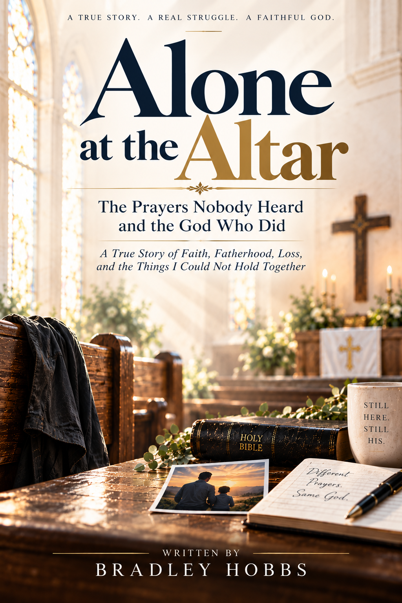

Faith
What remained when everything else felt uncertain.
Alone at the Altar is a true story of faith, fatherhood, loss, and the moments that nearly broke me. It is a story of real people, real struggles, and a faithful God who was still there, even when I felt alone.
Discover the Book
There
is always
hope.

This is more than a memoir. It is an honest look at the prayers, the pain, the fatherhood, and the faith that carried me through.
It is a story of what happens when everything begins to fall apart and you discover that God is still enough.
Explore the Book
What remained when everything else felt uncertain.

The love that shaped the story and the things worth fighting for.

The moments that could not be fixed, changed, or held together.

The God who remained present even when the prayers seemed unanswered.